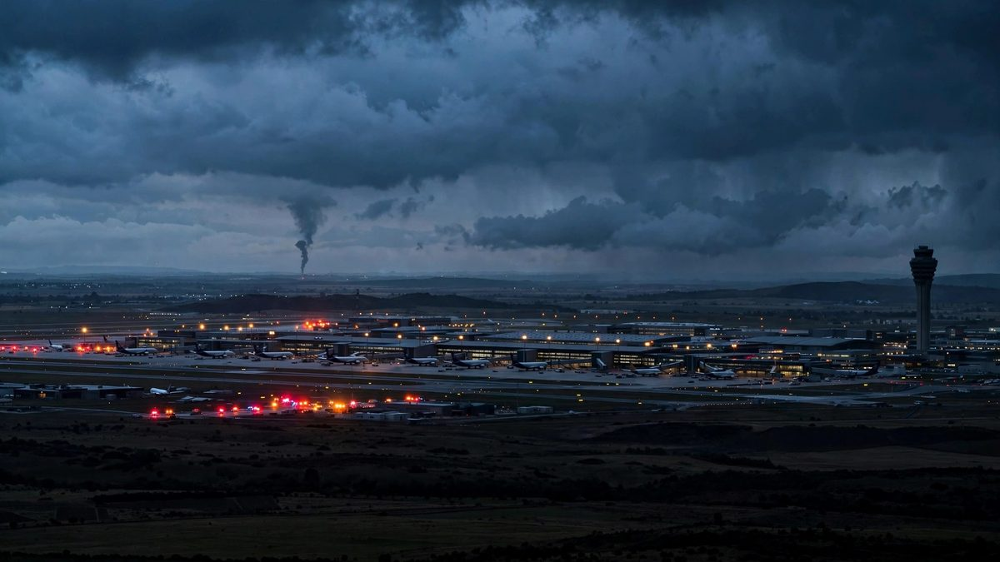

Los hutíes prometen más ataques tras el golpe a la sede de Aramco y un misil derribado sobre Riad
Un misil balístico fue interceptado sobre Riad el miércoles 14 de octubre. Los hutíes reivindicaron objetivos de Aramco en Dhahran y Riad, los escombros hirieron a cuatro personas en la capital el martes y el aeropuerto sigue cerrado hasta el 17 de octubre.

Puntos clave
- **Actualizado 05:37 UTC.** Se escucharon explosiones sobre Riad el miércoles 14 de octubre y la coalición liderada por Arabia Saudita dijo que había interceptado un misil balístico lanzado por los…
- Los hutíes dijeron el miércoles que habían lanzado misiles balísticos, misiles de crucero y drones contra instalaciones de Aramco en Dhahran, en el este, contra el Aeropuerto Internacional Rey…
- El martes 13 de octubre fue alcanzado un edificio administrativo del complejo de la sede de Aramco en Dhahran.
**Actualizado 05:37 UTC.** Se escucharon explosiones sobre Riad el miércoles 14 de octubre y la coalición liderada por Arabia Saudita dijo que había interceptado un misil balístico lanzado por los hutíes hacia la capital. Las autoridades saudíes habían emitido una alerta por una posible amenaza aérea ese día antes de levantarla, informó Reuters.
Los hutíes dijeron el miércoles que habían lanzado misiles balísticos, misiles de crucero y drones contra instalaciones de Aramco en Dhahran, en el este, contra el Aeropuerto Internacional Rey Jaled de Riad y contra una refinería de Aramco en Riad. El grupo dijo que seguirá atacando aeropuertos e instalaciones petroleras saudíes e instó a civiles, trabajadores y navieras a alejarse de esos lugares, a los que llamó objetivos militares. El grupo dice que los ataques responden al respaldo saudí a las fuerzas del gobierno de Yemen en una guerra que se reanudó el mes pasado.
El martes 13 de octubre fue alcanzado un edificio administrativo del complejo de la sede de Aramco en Dhahran. El Ministerio de Energía saudí dijo que el ataque causó un incendio limitado y ningún muerto ni herido. Una fuente de la empresa dijo a Reuters que un misil alcanzó el complejo y dañó los tres pisos superiores de una torre de oficinas. El complejo alberga un gran centro de operaciones para oleoductos, refinerías y terminales de exportación de Aramco.
También el martes, escombros de dos misiles interceptados cayeron en Riad, hirieron a cuatro personas y dañaron 15 viviendas, dijo la Defensa Civil saudí en un informe difundido el miércoles por la agencia estatal SPA. Las acciones saudíes cayeron en las primeras operaciones del miércoles, con el índice de referencia un 0,7 por ciento abajo y Aramco un 0,5 por ciento abajo, informó Reuters.
El presidente Donald Trump ha dicho que estudia si Estados Unidos debe sumarse a los ataques saudíes contra los hutíes. Un dirigente hutí advirtió que el grupo atacaría al personal y los intereses de Estados Unidos en la región si Washington intervenía, según la cobertura en vivo de CBS News. El aeropuerto de Riad, atacado cuatro veces en la última semana, sigue cerrado hasta el 17 de octubre y las aerolíneas han cancelado vuelos a Arabia Saudita.
Esta es una noticia en desarrollo y se actualizará.
**Actualizado 06:29 UTC.** Arabia Saudita abrió una investigación sobre cómo sus defensas aéreas no lograron detener el ataque contra el aeropuerto de Riad, dijeron el lunes a Associated Press dos funcionarios regionales. Los funcionarios, que hablaron sin dar sus nombres porque no estaban autorizados a hablar en público, dijeron que los primeros resultados apuntan a un ataque por capas. Primero fueron los drones. Después siguió una mezcla de misiles de crucero y balísticos hacia el Aeropuerto Internacional Rey Khalid.
Algunas ojivas pueden cambiar de rumbo en vuelo. Eso las hace más difíciles de detener para los interceptores Patriot, dijeron los funcionarios. Los investigadores también preguntan por qué el sistema no dio una alerta más temprana, aunque las armas volaron más de 1.000 kilómetros hasta llegar a la capital. La oficina del Gobierno saudita que atiende a la prensa extranjera no respondió de inmediato a una solicitud de comentarios, informó Associated Press. El ataque dejó al menos 13 muertos y más de 300 heridos.
**Actualizado 04:40 UTC.** El intercambio de fuego continuó el lunes por la noche. El portavoz militar hutí Yahya Sarea dijo que el grupo lanzó otro misil balístico contra el Aeropuerto Internacional Rey Khalid el lunes por la noche y afirmó que alcanzó su objetivo. También dijo que drones atacaron la base aérea Rey Khalid en Khamis Mushait, en el suroeste. La coalición liderada por Arabia Saudita dijo que interceptó y destruyó un misil balístico lanzado hacia Riad el lunes por la noche. Se escucharon explosiones en la capital y los residentes recibieron alertas en sus teléfonos, informó Xinhua.
Los hutíes dijeron que Arabia Saudita llevó a cabo 119 ataques contra zonas controladas por los hutíes en las 24 horas previas al lunes. La cadena al-Masirah, controlada por los hutíes, dijo que los ataques de la coalición en la provincia de Al-Jawf, cerca de la frontera saudí, mataron al menos a nueve personas e hirieron a siete. El ministerio de salud hutí dijo que entre los muertos en Al-Jawf había cinco niños y una mujer, en el distrito de Khabb wa ash-Shaaf. Reuters informó que los ataques aéreos saudíes se intensificaron el lunes, incluidos impactos en Al-Jawf. En Saná, el ministerio de salud hutí dijo que los ataques aéreos mataron a una persona e hirieron a 12, entre ellos en una fábrica de sal en el distrito de Hamadan, informó Associated Press. Majid al-Nuzaili, portavoz de las fuerzas del gobierno yemení respaldado por Arabia Saudita, afirmó que se realizaron 1.879 ataques contra objetivos hutíes y que unos 950 combatientes hutíes murieron. Esas cifras no pudieron verificarse.
**Actualizado 00:32 UTC.**
Arabia Saudita dijo que sus defensas aéreas interceptaron y destruyeron tres misiles balísticos hutíes el lunes, uno sobre Riad y dos sobre Khamis Mushait, en el suroeste, informó CNN. Los hutíes reivindicaron los ataques del lunes, dijeron que habían apuntado al Aeropuerto Internacional Rey Khalid y a una base militar, y renovaron su advertencia a las aerolíneas para que se mantengan alejadas de los aeropuertos sauditas, informó CNN. La coalición liderada por Arabia Saudita también reportó nuevos disparos de drones y misiles el lunes. The New York Post, citando comunicados de la coalición, dijo que varios ataques fueron interceptados cuando se dirigían hacia instalaciones de petróleo y gas. Reuters informó de drones y misiles entrantes el lunes, sin noticias inmediatas en ese momento sobre si habían sido detenidos.
El aeropuerto siguió cerrado. Horas antes de los ataques con misiles, la autoridad de aviación civil saudita dijo que el Aeropuerto Internacional Rey Khalid permanecería cerrado hasta nuevo aviso mientras los funcionarios completaban las revisiones de seguridad y preparación operativa, informó CNN. Un aviso a las misiones aéreas apunta a un cierre hasta al menos el 17 de octubre, informaron CNN y Reuters. Las aerolíneas siguieron retirándose. Lufthansa Group canceló todos los vuelos a Riad hasta el 16 de octubre y Air France-KLM extendió su suspensión hasta fin de mes, informó Reuters. Etihad suspendió sus vuelos a Arabia Saudita hasta el 13 de octubre, IndiGo extendió las cancelaciones en las rutas de Riad y Dammam hasta el 15 de octubre, Philippine Airlines extendió su suspensión de Riad hasta el 29 de noviembre, Gulf Air canceló los vuelos a Riad del 12 al 17 de octubre y Delta dijo el lunes que retrasaría su vuelo previsto de Atlanta a Riad hasta marzo de 2027, informó Reuters. La embajada de Estados Unidos en Riad endureció sus recomendaciones el lunes y dijo que su personal ahora necesita una autorización especial para usar cualquier aeropuerto de Arabia Saudita, informó CNN. La Administración Federal de Aviación había pedido el domingo a las aerolíneas estadounidenses que actuaran con cautela al volar hacia Arabia Saudita o sobre su territorio, informó Reuters.
Washington siguió sin intervenir. El presidente Donald Trump dijo el lunes que había hablado con el príncipe heredero saudita Mohamed bin Salman desde el ataque del sábado, informó CNN. No dio detalles de la llamada. Reuters señaló que aún no hay señales de una acción estadounidense contra los hutíes. Irán, el principal respaldo de los hutíes, se ofreció como intermediario. El ministro de Exteriores Abbas Araghchi dijo el domingo, en una llamada telefónica con su homólogo saudita Faisal bin Farhan, que Irán estaba dispuesto a ayudar a iniciar un diálogo entre Arabia Saudita y Yemen, y el portavoz Esmaeil Baghaei repitió la oferta el lunes, informó Reuters e IANS. Arabia Saudita confirmó que ambos ministros habían hablado por teléfono, pero su versión no mencionó una oferta de mediación.
El balance de la semana siguió subiendo. Los ataques contra el aeropuerto en la última semana han matado al menos a 20 personas y herido a cientos, informó CNN. Seis personas murieron en ataques entre el martes y el jueves, 13 murieron el sábado y una persona murió el domingo.
**Actualizado 12:23 UTC.**
Los ataques ya están pasando factura a la economía del reino. El índice bursátil de referencia de Arabia Saudita, el TASI, cayó un 0,6 por ciento en las primeras operaciones del lunes, mientras los inversores evaluaban el daño, informó Reuters. Al Rajhi Bank perdió un 0,6 por ciento y Saudi Aramco retrocedió un 0,3 por ciento, mientras los índices de Dubái, Abu Dabi y Catar subieron ligeramente.
Los consejeros delegados de ExxonMobil, TotalEnergies, Shell y BP retiraron su asistencia a una conferencia energética que llevaba tiempo preparándose en Riad, dijeron dos personas con conocimiento del asunto al Financial Times, según Reuters. La cita de cinco días había comenzado el domingo en un centro de convenciones a unos 10 km del aeropuerto atacado y continuó según lo previsto, indicó el ministerio saudí de Energía.
El caos aéreo siguió creciendo. Casi 1.500 vuelos han sido cancelados en toda Arabia Saudita desde que comenzaron los ataques, informó Gulf Business. Solo en el aeropuerto de Riad se cancelaron el lunes 436 vuelos, el 64 por ciento de los servicios programados, tras el cierre casi total del domingo, cuando quedaron en tierra el 98 por ciento de los vuelos, según datos de Flightradar24 revisados por el medio.
El ministro saudí de Energía, el príncipe Abdulaziz bin Salman, dijo que la respuesta del reino a los ataques contra el aeropuerto sería 'igual de firme', informó Travel Tomorrow. El asesor presidencial de los Emiratos Árabes Unidos, Anwar Gargash, pidió una acción conjunta del Golfo para preservar la seguridad de todos los estados de la región.
**Actualizado 08:25 UTC.**
Cuatro potencias regionales condenaron en conjunto los ataques contra el aeropuerto el domingo. Turquía, Pakistán, Egipto y Arabia Saudita, que se hacen llamar el R4, describieron los ataques como 'una escalada peligrosa que no puede justificarse ni aceptarse bajo ningún pretexto' y dijeron que respaldan plenamente todas las 'medidas y acciones legítimas' que Arabia Saudita tome para contrarrestarlos, informó Reuters. El grupo exigió a los hutíes detener los ataques de inmediato y sin condiciones, y dijo que responsabiliza plenamente a la milicia de las consecuencias.
Turquía y Pakistán firmaron en agosto un pacto de defensa conjunta con Arabia Saudita que trata un ataque contra una parte como un ataque contra todas. La semana pasada, los tres países acordaron aplicar sus compromisos de defensa colectiva, incluido el despliegue rápido de fuerzas y capacidades en el reino, informó Reuters. El ministro de Exteriores turco, Hakan Fidan, dijo el jueves que Ankara evalúa cómo ayudar, pero descartó despliegues de tropas y operaciones ofensivas; funcionarios dijeron a Reuters que Turquía enviaba sobre todo apoyo defensivo y técnico. El parlamento turco aún no ha ratificado el pacto; se espera que se presente en los próximos días.
La defensa civil saudí dijo que se emitieron alertas de emergencia en Abha, en el sur, en la madrugada del lunes, pero que el peligro ya había pasado. La coalición liderada por Arabia Saudita dijo que las defensas aéreas interceptaron y destruyeron un dron en la Provincia Oriental del reino y un misil balístico lanzado hacia Khamis Mushait.
**Actualizado 04:57 UTC.**
Arabia Saudí confirmó que un segundo aeropuerto fue atacado el domingo por la noche. La Autoridad General de Aviación Civil dijo que el Aeropuerto Internacional Rey Fahd en Dammam, en el noreste del reino, fue alcanzado, y que las autoridades evalúan los daños y realizan inspecciones de seguridad, informó CNN. The Times, citando a la autoridad saudí de aviación, publicó la misma confirmación. Los hutíes habían reivindicado el ataque contra el aeropuerto de Dammam; el comunicado saudí es el primer reconocimiento oficial de ese ataque.
Trump dijo el sábado que planeaba hablar con el príncipe heredero saudí Mohamed bin Salmán tras el ataque al aeropuerto, informó CNN, mientras Washington evalúa si se suma a los ataques saudíes contra los hutíes.
**Actualizado 01:30 UTC.**
El balance del sábado subió de nuevo. Un ciudadano indio herido en el ataque del sábado contra el Aeropuerto Internacional Rey Jaled murió el domingo a causa de sus heridas, lo que elevó la cifra de muertos de ese ataque a 13, según la embajada de India en Riad, informó el New York Post.
El ataque del domingo también resultó mortal. La autoridad saudí de aviación civil dijo que un ciudadano paquistaní murió y otras 11 personas resultaron heridas cuando un proyectil no identificado impactó la Terminal 4 y provocó un incendio, informó la Saudi Gazette.
Los hutíes asumieron la responsabilidad abiertamente el domingo. En un discurso televisado, el portavoz militar Yahya Saree reivindicó el ataque del sábado y dijo que el grupo también había atacado el aeropuerto de Dammam y dos instalaciones de la petrolera estatal Saudi Aramco. La afirmación sobre Aramco no pudo ser verificada de forma independiente.
Estados Unidos siguió evaluando una respuesta. El presidente Donald Trump había dicho que Washington podría sumarse a los ataques saudíes contra los hutíes, y Reino Unido advirtió a sus ciudadanos que eviten todos los viajes a Yeda y Dammam, y a todos los aeropuertos saudíes salvo el de Medina, que no sean esenciales, según The Times.
**Actualizado 19:09 UTC.**
El nuevo ataque del domingo contra el aeropuerto causó heridos, confirmó CNN, una señal de que la lucha por el espacio aéreo saudí se agrava un día después del ataque más mortífero contra un aeropuerto en el reino en más de una década.
El consejo militar hutí volvió a advertir el domingo a las aerolíneas y a los viajeros que se mantengan alejados de los aeropuertos y del espacio aéreo saudíes, y dijo que Arabia Saudita sería responsable de cualquier interceptación fallida. «Responderemos al bloqueo con bloqueo, y a la escalada con escalada», dijo el comunicado, informó CNN. El ministerio de Exteriores hutí añadió que cualquier nueva acción militar saudí en Yemen provocaría una respuesta más fuerte, y advirtió que «lo peor está por venir» si Riad no detiene lo que llamó su agresión, según la televisión hutí Al Masirah.
El enviado especial de la ONU para Yemen, Hans Grundberg, calificó los ataques al aeropuerto como «una grave escalada» y una seria amenaza para la seguridad regional. La embajada de EE. UU. en Riad dijo el domingo estar «profundamente entristecida» por las muertes del ataque del sábado y deseó a los heridos una recuperación plena y rápida.
**Actualizado 16:35 UTC.**
El aeropuerto fue atacado de nuevo el domingo. Un proyectil no identificado impactó la Terminal 4 e inició un incendio, con equipos de emergencia en el lugar, informó la coalición liderada por Arabia Saudita, según la agencia de prensa saudí. El portavoz de la coalición, mayor general Turki Al-Maliki, dijo que las defensas aéreas saudíes también interceptaron y destruyeron un misil de crucero cerca del aeropuerto. Fue el segundo ataque contra el aeropuerto en menos de un día tras el mortal ataque del sábado, y el cuarto en una semana.
Un alto funcionario hutí, Nasr al-Din Amer, pareció asumir la responsabilidad en X, escribiendo: «Cerramos el aeropuerto internacional de Riad», informó CNN. AFP dijo que se escucharon dos explosiones en la capital el domingo, aunque la causa no quedó clara de inmediato.
Las condenas siguieron llegando. El primer ministro israelí, Benjamin Netanyahu, condenó lo que llamó el «horrible ataque terrorista» contra el aeropuerto en X y ofreció condolencias a las familias de las víctimas, informó The Times. El aeropuerto permaneció cerrado al menos hasta el domingo por la noche, y CNN informó que más de 600 vuelos habían sido cancelados.
**Actualizado 14:10 UTC.**
Nuevos detalles aclararon el panorama del ataque del sábado. Le Monde informó que el misil impactó la terminal alrededor de las 3 p.m. hora local del sábado y que una mujer francesa figura entre los 309 heridos. Un video grabado por pasajeros, descrito por The Times, captó gritos y alaridos mientras el humo llenaba la terminal y las ambulancias corrían al aeropuerto.
Las consecuencias diplomáticas siguieron creciendo. El Ministerio de Exteriores británico ahora desaconseja todos los viajes a Riad que no sean esenciales, según The Times. El secretario de Defensa, Wes Streeting, calificó el ataque como una "escalada peligrosa", pero dijo que el Reino Unido no contempla operaciones ofensivas contra los hutíes "por ahora"; Londres ya apoya a Arabia Saudita con reabastecimiento defensivo en vuelo. La presidenta de la Comisión Europea, Ursula von der Leyen, sumó su condena a las del jefe de la ONU y el secretario de Estado estadounidense. El primer ministro de Pakistán, Shehbaz Sharif, condenó lo que llamó un ataque "atroz" y prometió el compromiso de Pakistán con la soberanía saudí, informó Le Monde.
La capital siguió en alerta, pero la cumbre energética se inauguró según lo previsto. La 25.ª edición del Congreso Mundial de Energía comenzó en Riad el domingo; la televisión estatal dijo que más de 70 ministros, 300 líderes empresariales y representantes de más de 25 organizaciones internacionales de energía confirmaron su participación, según Le Monde.
**Actualizado 13:57 UTC.**
Los hutíes renovaron el domingo su advertencia contra el uso de los aeropuertos saudíes. En una publicación en X, el grupo pidió a las aerolíneas, los viajeros y los trabajadores de los aeropuertos que se mantengan alejados de los aeropuertos y el espacio aéreo saudíes, a los que calificó como "un teatro de operaciones" para sus fuerzas, informó Reuters. Solo quedaron exentos los aeropuertos que sirven a las ciudades sagradas de La Meca y Medina. "Instamos a todos a tomar en serio nuestras advertencias, y Arabia Saudita será responsable de cualquier interceptación fallida", decía la publicación.
La coalición liderada por Arabia Saudita dijo que interceptó un dron en la región el domingo, un día después de que un proyectil cayera cerca del Aeropuerto Internacional Rey Fahd de Dammam.
A pesar del cierre del aeropuerto, el ministerio saudí de Energía dijo que una conferencia internacional de energía planificada hace tiempo seguiría adelante en Riad el domingo.
**Actualizado 08:06 UTC.**
Los ataques se extendieron más allá de Riad. Horas después del ataque del sábado contra el Aeropuerto Internacional Rey Jaled, un proyectil cayó cerca del Aeropuerto Internacional Rey Fahd de Dammam, en el noreste de Arabia Saudita, cerca de Baréin, dijo el portavoz de la coalición, el mayor general Turki Al-Maliki.
Los hutíes también advirtieron a las aerolíneas contra usar el espacio aéreo saudí, declarándolo zona de operaciones militares, informó CNN. El aeropuerto de Riad permanecería cerrado hasta las 9 p.m. hora local del domingo, con al menos 627 vuelos dominicales cancelados, según Flightradar24.
Los funcionarios de salud activaron una rara movilización masiva de médicos para atender a los heridos, que suman 309, algunos en estado crítico, informó AFP.
**Actualizado 05:40 UTC.**
Las condenas y las consecuencias se ampliaron el domingo. El secretario general de la ONU, António Guterres, dijo en X que estaba "profundamente consternado" por el ataque del sábado, que según él mató a 12 personas e hirió a cientos de civiles, y que los ataques contra civiles e infraestructura civil violan el derecho internacional y "deben cesar de inmediato". El ministerio de Exteriores de la India condenó lo que llamó el "cobarde ataque" del 10 de octubre, calificó los repetidos ataques contra el aeropuerto de "totalmente inaceptables" y dijo que se solidariza con Arabia Saudita en defensa de su soberanía.
La coalición liderada por Arabia Saudita prometió responder. El portavoz, mayor general Turki al-Malki, calificó el ataque contra pasajeros civiles y trabajadores del aeropuerto como un crimen de guerra de la milicia hutí y dijo que las fuerzas de la coalición responderían, según el Wall Street Journal.
La interrupción siguió creciendo. Unos 580 vuelos fueron cancelados el domingo, según el sitio de seguimiento de vuelos Flightradar24, y Estados Unidos, Reino Unido, España y Canadá advirtieron a sus ciudadanos contra usar el aeropuerto, informó CNN. The Times informó que Lufthansa y Emirates cancelaron sus vuelos a Riad y que las escuelas de la capital recibieron la orden de pasar a clases a distancia durante una semana.
**Actualizado 03:17 UTC.**
Washington reaccionó con más dureza durante la noche. El secretario de Estado Marco Rubio condenó el ataque en un comunicado, diciendo que los ataques mostraron "un desprecio flagrante por la vida civil inocente" y que "deben detenerse ya". El presidente Donald Trump dijo que planea hablar con el príncipe heredero saudí Mohammed bin Salman, según una reportera de CBS News. Trump ya había dicho que Estados Unidos evalúa sumarse a los ataques saudíes contra los hutíes.
Mientras tanto, el jefe de la oficina de medios hutí dijo en X que el grupo había "cerrado" el aeropuerto, según Reuters. El aeropuerto seguía cerrado y todos los vuelos fueron desviados de la ciudad, indicó la autoridad saudí de aviación civil.
**Actualizado 19:35 UTC.**
El recuento oficial de heridos se mantenía en "varios" el sábado por la noche. Las autoridades saudíes no habían confirmado las cifras más altas que circulaban desde fuentes hospitalarias anónimas, que elevaban el número.
Las condenas se ampliaron en la región. El ministerio de Exteriores de Egipto calificó el ataque como una violación del derecho internacional y declaró su plena solidaridad con Arabia Saudita.
La interrupción de los vuelos también creció durante la noche. Kuwait Airways canceló dos vuelos de Riad, el KU775 y el KU776, mientras que Etihad Airways y Qatar Airways cancelaron varios más. La Agencia de Seguridad Aérea de la Unión Europea ya había ampliado su advertencia contra volar sobre el espacio aéreo saudí ante la escalada de ataques con misiles y drones hutíes.
RIAD - Arabia Saudita cerró el sábado el aeropuerto de su capital después de que un ataque con misiles alcanzara una terminal de pasajeros y dejara varios heridos, informó la autoridad de aviación civil del país.
La Autoridad General de Aviación Civil dijo que el Aeropuerto Internacional Rey Jaled fue atacado y que "varias" personas resultaron heridas. El aeropuerto suspendió sus operaciones mientras los equipos evalúan los daños e inspeccionan las instalaciones, indicó la autoridad.
La Terminal 3 recibió un impacto directo y fue evacuada, dijeron funcionarios saudíes al Wall Street Journal. Ambulancias y helicópteros trasladaron a los heridos a un hospital de la capital mientras una columna de humo se elevaba sobre el aeródromo. Vecinos del aeropuerto reportaron haber escuchado fuertes explosiones.
Un testigo describió una explosión dentro de la terminal. Un viajero herido dijo a Reuters que vio algo cruzar el cielo fuera del aeropuerto y que luego parte del techo cerca de una puerta de embarque se derrumbó.
Los datos de seguimiento de vuelos mostraron llegadas canceladas o desviadas. Un pasajero que volaba a Riad dijo que su avión fue enviado a Dammam y continuó a la capital por carretera.
Las embajadas advierten a los viajeros
La embajada de Estados Unidos dijo estar al tanto de los ataques y pidió a los estadounidenses evitar el aeropuerto y las zonas cercanas. Canadá, Alemania, Irlanda y Reino Unido también pidieron a sus ciudadanos mantenerse alejados, y Canadá citó actividad militar que interrumpe los vuelos.
Sin reivindicación, pero un patrón claro
Ningún grupo reivindicó de inmediato el ataque. Ocurrió en medio de una campaña cada vez más amplia de ataques con misiles hutíes contra aeropuertos, instalaciones militares y petroleras saudíes. El grupo yemení, aliado de Irán, dijo esta semana que el espacio aéreo saudí ahora forma parte del campo de batalla.
El ataque siguió al del jueves contra el mismo aeropuerto, que mató a tres personas, incluido un piloto de la aerolínea bandera Saudia, y destruyó un avión de pasajeros estacionado. El sistema de alerta temprana de Arabia Saudita no emitió aviso antes del ataque del sábado.
El presidente Donald Trump, hablando fuera de la Casa Blanca el sábado, dijo que Estados Unidos evalúa sumarse a los ataques saudíes contra los hutíes. "Podríamos hacerlo. Lo vamos a estudiar. Acabamos de enterarnos del reciente ataque, así que tomaremos una decisión. Nos movemos muy rápido", dijo.
Qué significa
Los ataques repetidos amenazan con paralizar los viajes de negocios y el turismo en el reino justo cuando comienza la temporada alta de conferencias. Los precios del petróleo también subieron tras los ataques anteriores, sumando presión en los mercados de energía a la crisis de seguridad.
Esta es una noticia en desarrollo y se actualizará.
Cronología
- Oct 14, 2026La coalición liderada por Arabia Saudita dijo que interceptó el miércoles un misil balístico lanzado hacia Riad y se escucharon fuertes explosiones en la capital, informó Reuters. Las autoridades levantaron ese día una alerta previa por amenaza aérea.
- Oct 14, 2026Los hutíes dijeron que habían lanzado misiles balísticos, misiles de crucero y drones contra instalaciones de Aramco en Dhahran, el Aeropuerto Internacional Rey Jaled de Riad y una refinería de Aramco en Riad, y prometieron seguir atacando aeropuertos e instalaciones petroleras.
- Oct 13, 2026Un edificio administrativo del complejo de la sede de Aramco en Dhahran fue alcanzado el martes, con un incendio limitado y sin heridos, dijo el Ministerio de Energía saudí. Una fuente de la empresa dijo a Reuters que los tres pisos superiores de una torre de oficinas resultaron dañados.
- Oct 13, 2026Escombros de dos misiles interceptados cayeron en Riad el martes, hirieron a cuatro personas y dañaron 15 viviendas, dijo la Defensa Civil saudí en un informe difundido por SPA el miércoles.
- Oct 12, 2026Arabia Saudita abrió una investigación sobre cómo sus defensas aéreas no lograron interceptar la andanada contra el aeropuerto de Riad, dijeron dos funcionarios regionales a Associated Press. Los primeros hallazgos indicaron que primero volaron drones, seguidos de misiles de crucero y balísticos, y los investigadores preguntaron por qué no hubo una alerta previa.
- Oct 12, 2026Las defensas aéreas sauditas interceptaron y destruyeron el lunes tres misiles balísticos hutíes, uno sobre Riad y dos sobre Khamis Mushait, informó CNN.
- Oct 12, 2026La aviación civil saudita mantuvo cerrado el Aeropuerto Internacional Rey Khalid hasta nuevo aviso; un aviso a las misiones aéreas apuntaba a un cierre hasta al menos el 17 de octubre, informaron CNN y Reuters.
- Oct 12, 2026Trump dijo el lunes que había hablado con el príncipe heredero saudita Mohammed bin Salman desde el ataque del sábado, informó CNN; Reuters señaló que aún no había señales de una acción de Estados Unidos.
- Oct 12, 2026El ministro de Exteriores iraní, Abbas Araghchi, ofreció en una llamada telefónica el domingo con su homólogo saudita ayudar a iniciar un diálogo entre Arabia Saudita y Yemen; el portavoz Esmaeil Baghaei repitió la oferta el lunes, informaron Reuters e IANS.
- Oct 12, 2026Las aerolíneas ampliaron las suspensiones en Riad, entre ellas Lufthansa Group hasta el 16 de octubre, Air France-KLM hasta fin de mes y Philippine Airlines hasta el 29 de noviembre, informó Reuters.
- Oct 12, 2026El índice de referencia saudita TASI cayó 0.6 por ciento en las primeras operaciones del lunes, con Al Rajhi Bank con una baja de 0.6 por ciento y Saudi Aramco con una baja de 0.3 por ciento, informó Reuters.
- Oct 12, 2026Los directores ejecutivos de ExxonMobil, TotalEnergies, Shell y BP se retiraron del Congreso de Energía WPC en Riad, planeado desde hace tiempo, informó Reuters, citando al Financial Times.
- Oct 12, 2026Cerca de 1,500 vuelos fueron cancelados en toda Arabia Saudita, informó Gulf Business; solo en el aeropuerto de Riad se cancelaron 436 vuelos del lunes, el 64 por ciento de los servicios programados.
- Oct 12, 2026El ministro saudita de Energía, el príncipe Abdulaziz bin Salman, dijo que la respuesta del reino sería 'igualmente seria', mientras el asesor presidencial de Emiratos Árabes Unidos, Anwar Gargash, pidió una acción conjunta del Golfo, informó Travel Tomorrow.
- Oct 12, 2026 (early)Turquía, Pakistán, Egipto y Arabia Saudita condenaron los ataques al aeropuerto en un comunicado conjunto como 'una escalada peligrosa que no puede justificarse ni aceptarse bajo ningún pretexto', respaldaron las 'medidas y pasos legítimos' de Arabia Saudita y exigieron un cese inmediato e incondicional, informó Reuters.
- Oct 12, 2026 (early)Turquía y Pakistán firmaron en agosto un pacto de defensa conjunto con Arabia Saudita; la semana pasada los tres acordaron aplicar compromisos de defensa colectiva que incluyen el despliegue rápido de fuerzas y capacidades en el reino. Ankara descartó tropas y operaciones ofensivas, y envió apoyo defensivo y técnico, informó Reuters.
- Oct 12, 2026 (early)La defensa civil saudita emitió alertas de emergencia en Abha, en el sur, pero el peligro pasó después; las fuerzas de la coalición interceptaron un dron en la Provincia Oriental y un misil balístico lanzado hacia Khamis Mushait, informó Reuters.
- Oct 11, 2026 (late night)La autoridad saudita de aviación civil confirmó que el Aeropuerto Internacional Rey Fahd en Dammam fue alcanzado el domingo por la noche; se realizaban evaluaciones de daños e inspecciones de seguridad, informaron CNN y The Times.
- Oct 11, 2026 (late night)Trump dijo que planeaba hablar con el príncipe heredero saudita Mohammed bin Salman tras el ataque al aeropuerto, informó CNN.
- Oct 11, 2026 (night)Un ciudadano indio herido en el ataque del sábado murió a causa de sus heridas, lo que elevó a 13 el número de muertos del sábado, dijo la embajada de India en Riad, según el New York Post.
- Oct 11, 2026 (night)La autoridad saudita de aviación civil dijo que un ciudadano pakistaní murió y otras 11 personas resultaron heridas en el ataque del domingo contra la Terminal 4, que provocó un incendio, informó la Saudi Gazette.
- Oct 11, 2026 (night)El portavoz militar hutí Yahya Saree reivindicó en un discurso televisado la responsabilidad del ataque del sábado contra el aeropuerto, y reivindicó ataques contra el aeropuerto de Dammam y dos instalaciones de Saudi Aramco; la afirmación sobre Aramco no pudo verificarse de forma independiente.
- Oct 11, 2026 (night)Reino Unido desaconsejó todo viaje que no fuera esencial a Jeddah y Dammam y a todos los aeropuertos sauditas excepto el de Medina, informó The Times; Estados Unidos seguía evaluando si unirse a los ataques sauditas.
- Oct 10, 2026Un ataque con misiles alcanza la Terminal 3 del mismo aeropuerto; varias personas resultan heridas y se suspenden todas las operaciones.
- Oct 10, 2026 (evening)Egipto condenó el ataque como una violación del derecho internacional; Kuwait Airways, Etihad y Qatar Airways cancelaron los vuelos a Riad mientras el aeropuerto permanecía cerrado.
- Oct 10, 2026 (night)El balance oficial sube a 12 muertos y 309 heridos después de que los misiles alcanzaran las terminales 3 y 4; la embajada de Estados Unidos insta con firmeza a los estadounidenses a evitar el aeropuerto.
- Oct 11, 2026La reacción de Estados Unidos se endureció durante la noche: Rubio condenó el ataque y Trump dijo que hablaría con el príncipe heredero Mohammed bin Salman; el aeropuerto permaneció cerrado.
- Oct 11, 2026Las condenas se ampliaron: el secretario general de la ONU e India condenaron el ataque, la coalición liderada por Arabia Saudita prometió una respuesta, se cancelaron unos 580 vuelos del domingo y las escuelas de Riad pasaron a clases a distancia durante una semana.
- Oct 11, 2026Un proyectil cayó cerca del Aeropuerto Internacional Rey Fahd en Dammam horas después del ataque de Riad, dijo el portavoz de la coalición, el general de división Turki Al-Maliki; los hutíes advirtieron a las aerolíneas que evitaran el espacio aéreo saudita y lo calificaron de zona de operaciones militares.
- Oct 11, 2026Se esperaba que el aeropuerto de Riad permaneciera cerrado hasta las 9 p.m. hora local del domingo, con al menos 627 vuelos del domingo cancelados, según Flightradar24; las autoridades sanitarias activaron una convocatoria masiva de médicos para los 309 heridos.
- Oct 11, 2026Los hutíes renovaron su advertencia el domingo y dijeron en una publicación en X a aerolíneas, viajeros y trabajadores aeroportuarios que evitaran los aeropuertos y el espacio aéreo sauditas, excepto los aeropuertos que sirven a La Meca y Medina, informó Reuters.
- Oct 11, 2026La coalición liderada por Arabia Saudita dijo que interceptó un dron en la región el domingo; el Ministerio de Energía dijo que una conferencia internacional de energía planeada desde hace tiempo seguía adelante en Riad a pesar del cierre del aeropuerto.
- Oct 11, 2026Nuevos detalles: el misil impactó hacia las 3 p.m. hora local del sábado; una mujer francesa estaba entre los 309 heridos; Reino Unido desaconsejó todo viaje a Riad que no fuera esencial; y el primer ministro de Pakistán y la presidenta de la Comisión Europea se sumaron a las condenas.
- Oct 11, 2026Un proyectil no identificado alcanzó la Terminal 4 el domingo y provocó un incendio, dijo la coalición liderada por Arabia Saudita; las defensas aéreas interceptaron y destruyeron un misil de crucero cerca del aeropuerto. El segundo ataque en menos de un día fue el cuarto de esta semana.
- Oct 11, 2026El alto funcionario hutí Nasr al-Din Amer pareció reconocer la responsabilidad en X, al escribir que el grupo había 'cerrado el aeropuerto internacional de Riad'; Netanyahu condenó el 'horrible ataque terrorista'. Se cancelaron más de 600 vuelos.
- Oct 11, 2026El segundo ataque del domingo causó heridos, confirmó CNN; los hutíes advirtieron que responderían a la 'escalada con escalada', y el enviado de la ONU para Yemen calificó los ataques de 'grave escalada'.
- Oct 12, 2026Lunes por la noche: los hutíes reivindican un nuevo ataque con misiles contra el aeropuerto de Riad y un ataque con dron contra la base aérea Rey Khalid. La coalición dice que derribó un misil dirigido a Riad. Medios hutíes dicen que ataques sauditas mataron al menos a nueve personas en Al-Jawf.
Fuentes
- CNN: Multiple people wounded in attack on Riyadh airport, Saudi aviation authority says
- Wall Street Journal: Saudi Arabia Closes Airport in Riyadh After Damaging New Houthi Attack
- Reuters: Several wounded in Riyadh airport attack, operations suspended, Saudi aviation authority says
- Gulf Business: Riyadh airport suspends operations after new attack leaves several injured
- Daily Kiran: Egypt condemns attack on Riyadh airport as violation of international law
- NY Post: Iran-backed Houthis strike Riyadh airport in Saudi Arabia, as Trump sends warning after attack
- TBS News: Several wounded in Riyadh airport attack, operations suspended, Saudi aviation authority says
- LiveMint: Riyadh airport attack: At least 12 killed, over 300 injured, Trump says strikes 'not acceptable'
- The Times: Houthi missile attack on Saudi's Riyadh airport kills 12, injures 300
- IANS: 'Unacceptable': India condemns attack on Saudi airport, calls for immediate cessation
- Devdiscourse: UN chief Guterres condemns Houthi strike on Saudi Arabia's Riyadh airport
- Gulf Business: Latest Riyadh airport attack kills 12, injures 309 as more than 200 flights cancelled
- Balita.org: Houthi strike on Riyadh airport kills 12, wounds over 300
- Reuters: Yemen's Houthis renew warning over Saudi airports after deadly Riyadh attack
- Le Monde: Saudi Arabia weighs response after deadliest Houthi attack on Riyadh in a decade
- The Times: Saudi Arabia attacks latest: Airport hit second time after 12 killed in Houthi strike
- Virgin Radio Dubai: Authorities respond to fire at Riyadh airport terminal hit by 'unidentified projectile'
- Reuters: Yemen's Houthis renew warning to airlines, travellers against using Saudi airports
- Democrata: Several injured in another Houthi attack against the airport of Riyadh
- NY Post: Houthis, Saudis ratchet up violence with back-and-forth airport strikes
- Devdiscourse: One dead in new attack on Saudi airport, a day after Houthi strike kills 13
- ViewsNewsNow: Pakistani Killed, 11 Injured in Sunday's Houthi Attack on Riyadh Airport
- 1Arabia: Saudi coalition pledges reprisals over deadly Riyadh airport strike
- The Sun: Houthi rebels blitz Riyadh airport again and claim deadly attack that killed 13
- CNN: Saudi airport struck again a day after attack killed at least 13 and wounded hundreds
- Reuters: Turkey, Pakistan, Egypt, Saudi Arabia condemn Houthi attacks on Riyadh airport
- Reuters: Saudi shares fall after second airport attack as Gulf trade stays cautious
- Reuters Breakingviews: Riyadh attacks hit core of Saudi's economic pivot
- Gulf Business: Riyadh airport closure extended as authorities assess safety
- Travel Tomorrow: Fourth attack on Riyadh airport in five days leaves one dead and 11 injured
- Reuters: Saudi Arabia faces new missile and drone fire after major attacks on airports
- Reuters: Skies over Saudi capital Riyadh largely empty after deadly Houthi strikes on airport
- Reuters: Airlines cancel flights to Saudi Arabia after Riyadh airport attacks
- New York Post: Saudi Arabia faces new missile, drone strikes after deadly Houthi airport attacks
- IANS: Iran reiterates readiness to help facilitate dialogue between Saudi Arabia, Yemen
- IANS: Yemen's Houthis claim new strike on Riyadh airport as Tehran offers to facilitate dialogue
- Nation Press: Houthis claim Riyadh airport strike again as Iran offers dialogue
- Associated Press: Airstrikes on Yemen's capital and other Mideast developments
- Associated Press via LaPresse: Riyadh launches investigation into failed Houthi missile interception
- Al Jazeera: Houthi missile attack targets Saudi capital Riyadh for third day in a row
- LiveMint: Saudi Arabia shuts Riyadh airport until October 17 after attacks, why Houthi missiles are getting through
- Reuters: Yemen's Houthis vow more attacks on Saudi airports, oil facilities after Aramco HQ hit
- Reuters: Saudi stocks slip after attack on Aramco building; Gulf markets mixed
- CBS News: Live updates on Houthi attack on Saudi capital and Trump weighing US role